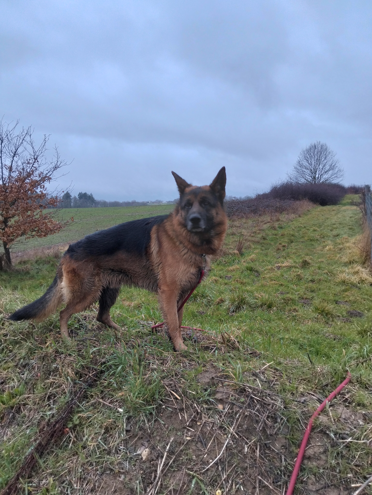
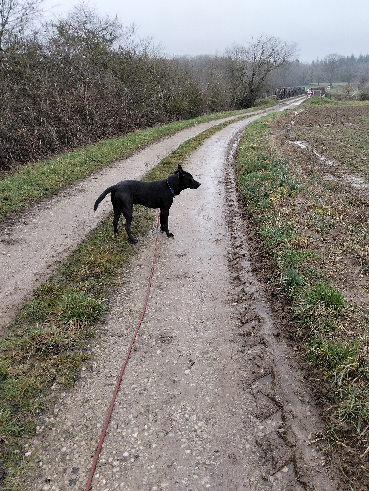
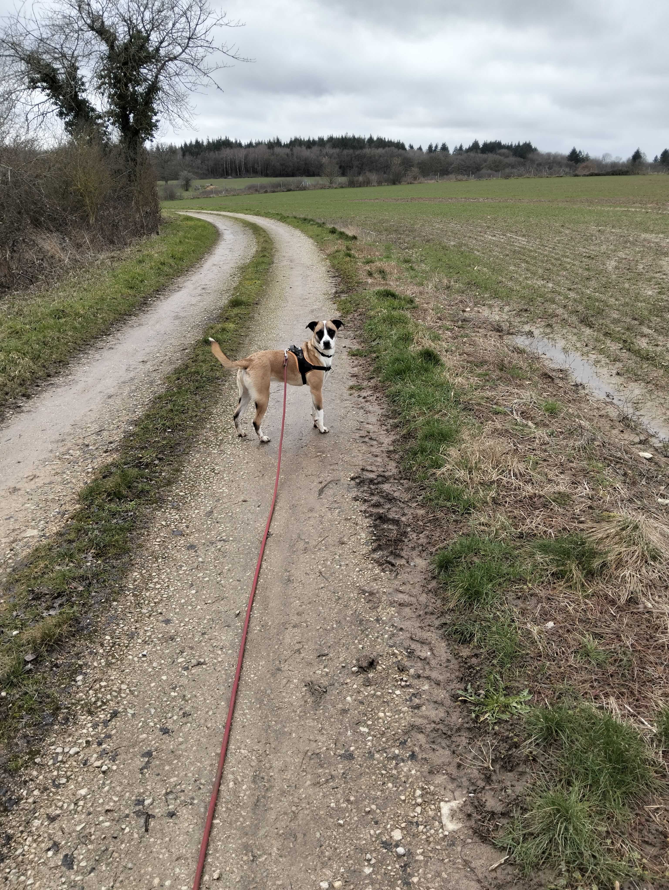

Découvrez quelques-uns de nos pensionnaires accueillis à la Pension Canine de La Prêlée. Chaque chien bénéficie d’une attention particulière, d’un espace confortable et de sorties quotidiennes dans un environnement calme et sécurisé.


